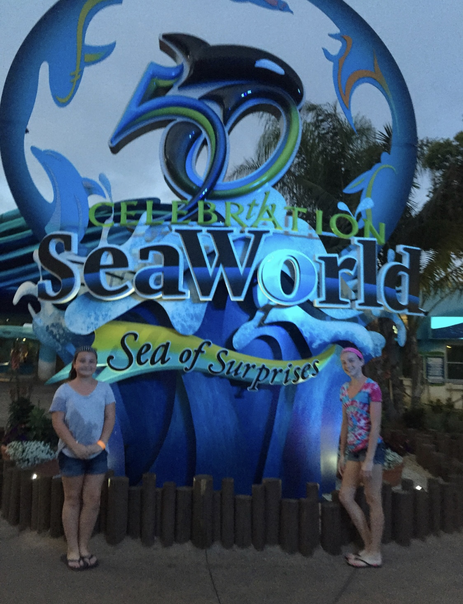

Universal Studios
Our first day in California was a blast visiting Universal Studios. Apparently, this was the beginning of spring break for EVERYONE! The smarest thing I did was pay extra for a fast pass. The fast pass allows you to cut to the front of the line for each ride one time. It was certainly more expensive but boy was it worth it. All of the rides at Universal Studios are virtual reality roller coaster rides. I myself became nauseous and had to close my eyes throughout the ride so I did not vomit on the other people around me. My daughters favorite ride was The Simpsons Ride in Krustyland. My youngest daughter swears the Krusty Burger is the BEST burger EVER!!

Disneyland
So after a very fun and long day at Universal Studios, we get up early and go to Disneyland. This was not a good idea because we were exhausted and sore from the day before. I did not pay extra for a fast pass and did not do my homework on Disneyland. We only rode maybe three rides at seem to take all day. We were all about in tears from just being exhausted and we ended up leaving early. That was a very expensive day. You live and you learn. Note to self, do better research on how fast passes work and splurge on paying for those fast passes...or don't go!

Sea World
We are back at it the next morning to Sea World, which is 3 hours away in San Diego. It was nice because I was able to score some free tickets, which was a huge help to my budget. We really loved Sea World. I wanted the girls to swim with the dophins and waited until the last minute to book this event and it was sold out. I was so upset, I started crying. HA!! I was a tad emotional but when you are widowed and trying to give your children all you can, some things are more sensative and at times you really do not know when your emotions are going to turn on you.

Manhattan Beach and Then Some
For a few hours we stayed at a friend of a friends 5 million dollar beach front home. The girls played in the Pacific Ocean as they found several whole sand dollars. I was surprised that the beaches had lots of rocks and oil. After a few hours at the beach, we went on a TMZ Tour. The cast from the Fast and the Furious were having their movie premiere and we were able to see the corner of Vin Disel's head. But on the actual TMZ Tour we did not see any celebrities. Later we went to SUR Resturant for dinner. If you are a fan of the reality show Vanderpump Rules, you know exactly where we were. We got to visit with Tom Sandoval, Kristen Doute, Ariana Madix, James Kennedy and saw Lisa Vanderpump and Ken Todd.

Malibu
We are now on day 5 of our trip and loving it. If I were to do it over again, I would not go to three amusement parks in a row. In Malibu, we went paddle boarding. Now, please remember we are in the OCEAN! It's myself and two of my three daughters. We are on our own individual paddle board. You can not touch the bottom and you can not see the bottom either. We did have a woderful guide Troy. This was our first time on paddle boards. I was not brave enough to stand up. Both girls did and then my yougest, who was probably 11 years old at the time, fell in. Oh know! But in a split second, that child was out of the water and safely back on top of her board. Thank you!! Because I really did not want to have to explain why mommy would not jump in after her. But we all know, I would have!! After paddle boarding, we went kayaking. Again, we were exhausted from paddle boarding but I am trying to have us experience every single thing. My youngest daughter was exhausted and was able to kayak with our guide. I am thankful she was with him because they were a little bit of a distance from me a a momma and baby dolphin come up out of the water riding along aside of them.

Catalina Island
The final day of our trip was a helicopter ride to Catalina Island. Now, I thought I was going to have a difficult time with my first time flying in a helicopter over a body of water. But actually it was a very calm 15 minute flight. The girls sat in the front seat together. As soon as we arrived we took a bus to the zip line tours. We zipped lined our way down. Now, this was something. The instructor pretty much had to push me off of the platform. But once I did it, I was then runnign and jumping off. This was an incredible trip and one my daughters will never forget.